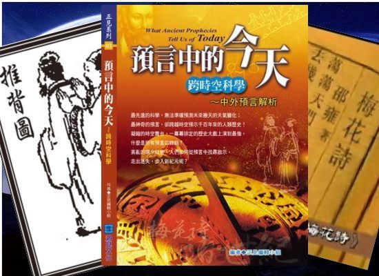
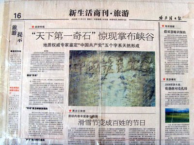
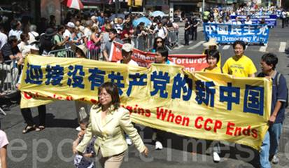

| 朋友：
您好！虽然我们素不相识，但却都有一个共同的心愿，那就是希望自己及家人活的幸福、平安，不要有什么灾难降临到自己身边。可是，当灾难真的要降临时，当有人善意的告诉您怎样躲避时，您是否愿意改变您固有的观念，为自己和家人选择一个美好的未来呢？
印度洋大海啸时，曾有当地人奉劝那些玩性正浓的旅游者，让他们赶紧离开，说就要发生大海啸了。可是那些旅游者看着风平浪静的海面，根本不相信那人的劝说，还嘲笑他。不多久，灾难来临了……多么惨痛的教训啊！
印度洋大海啸后死者遍地
大海啸灾后 一位母亲抱着孩子坐在废墟上
朋友，目前，在中华大地上，说的广一点，在地球上正在发生着一些事，将来还会有更大的事发生，您是否已经听说了呢？那么，您听说过或见过优昙婆罗花吗？您知道“藏字石”吗？您读过古今中外的预言书吗？
优昙婆罗花
我们就先说说优昙婆罗花吧！据佛经记载：优昙婆罗花为梵文的音译，意为灵瑞花、空起花、起空花，是传说中的仙界极品，因其花“青白无俗艳”被尊为佛家花。佛经中说：此花三千年一开，花开之时为转轮圣王（又为金轮王）下世正法度人之时。《慧琳音义》卷八载：“优昙婆罗花为祥瑞灵异之所感，乃天花，为世间所无，若如来下生、金轮王出现世间，以大福德力故，感得此花出现。”
开放在须弥山禅寺佛像上的优昙婆罗花
金属灯座上的优昙婆罗花
玻璃窗上的优昙婆罗花
一束优昙婆罗花
自法轮功传出以来，世界各地优昙婆罗花相继开放，此花可以在诸如佛像、铁管、树叶、衣服、玻璃、电脑屏幕、墙壁等任何器物上开放。中共一直不承认此花为优昙婆罗花，把如此圣洁的花诬为虫卵（是否虫卵拿照片一对比立见分晓），但是，在2010年官方媒体报道中，官媒间接的承认了此花就是传说中的优昙婆罗花，不再说是虫卵了（可上网搜索“优昙婆罗花”观看
更多图片）。
放大拍摄的优昙婆罗花 可见花瓣、花蕊
虫卵,外观呈椭圆形状和有壳质感 优昙婆罗花
，有花瓣、花蕊
预 言
接着说说不同国家、不同朝代的预言吧！我国三国时期诸葛亮的《马前课》；明朝刘伯温的《烧饼歌》；唐朝李淳风和袁天罡的《推背图》；宋朝邵雍的《梅花诗》；韩国的《格庵遗录》；著名的《圣经启示录》；玛雅预言等都不约而同地都提到了末法后期、世纪之交（20世纪末至21世纪初）人类会面临一场大劫难，会淘汰许多人，只留下少数好人，玛雅预言更是将大灾难时间预言在了2012年。最重要的和最让人惊奇的是，前面的预言都成了现实。对现在时期的预言，中国古代几乎所有预言又都提到了经过大灾大难之后圣人出世，最后四方来朝，天下大同，中国地位鼎盛（各大预言可上网搜索，以观其详）。

神奇的预言
藏字石

中国大陆报纸的相关报道
再说藏字石，2002
年，贵州平塘县掌布乡惊现2.7亿年前形成的“藏字石”，上现：“中国共产党亡”六个大字。经过科学家们的考察与鉴定，“藏字石”上所现“中国共产党亡”大多由生物化石组成，组成的生物有海绵、海百合茎、腕足类等。从组成字的痕迹中可以清晰地看到有许多椭圆形和柱状结构，正是这些无序的化石堆积物，在这个节理剖开的断面上十分巧合地组成了有序的六个大字。六个字浑然天成，无人工雕琢、塑造、粘贴的痕迹。平塘人为了发展旅游业将该六个字的图片印在了门票上。中央电视台10频道的科学与生活栏目也对该石做了专题报道，只是始终没敢提那个“亡”字，只说有五个字。群众的眼睛是亮的，到底几个字，上网看看旅游者发的图片，或者专门去旅游一趟，不就什么都清楚了，真的永远假不了（可以上网搜索“藏字石”三字一睹神迹）。
上图照片来自藏字石景点门票
电视报道 国内专家实地考察 认定为天然形成
听说过天灭中共吗？“藏字石”不就是显露的天灭中共的天机吗？预言中也预言到中共的灭亡，和天灭中共时其追随者被一同诛灭的可怕惨景。中国共产党不是一个空壳，它是由加入该组织的党、团、队员组成的，天灭中共时，这些人该怎么办？那么神就要给人一个选择的机会。是抛弃邪恶、选择光明，还是随着邪党一同被消灭，对于这个关系到每个人的生死的问题，朋友，您想过吗？
《九评共产党》

《九评共产党》
可能你要问了，天为什么要灭中共呢？那可能是您对中共还缺乏了解。2004年，大纪元发表《九评共产党》系列社论，从历史、政治、经济、文化、信仰等层面深刻揭示了中共的欺骗、暴力、邪教和流氓本性。中共自窃国以来，大肆推行“假、恶、斗”的党文化，破坏道德、打击善良、迫害正信、不敬神佛、谎言遍布。历次运动使中国八千万人非正常死亡，今天的中国自然环境被强力破坏，传统道德丧失殆尽，贪污腐败盛行，黑社会、吸毒、卖淫、二奶充斥中国大地，人民的合法权利、言论自由被非法剥夺，强拆造成人们无家可归，举报恶人的人被打击报复，善良的人被无辜迫害却有怨无处诉，有毒产品、假货无孔不入的毁坏着人们的健康。这一切都是中共推行无神论，不信神佛、战天斗地的恶果。
荒唐害人的文化大革命中的批斗会
1989年6月4日中共对市民和学生的屠杀

中共军人六.四凌晨在广场上转移和焚烧尸体

贪腐成风

执法者堪比土匪

民不聊生-寒风中讨薪的民工

民不聊生-因拆迁被逼自焚的百姓

民不聊生-有毒奶粉受害儿童

民不聊生-无依无靠的老者
古人云：善恶到头终有报。中国的人们在加入中共党团队时，都要发誓把一生都交给它。中共推崇无神论，却让人们发誓效忠它，这本身说明了什么，不就是实行愚民政策不让群众信而自己信，有好事它得吗？君不见有几个官员没进过庙、没烧过香、没拜过佛、没算过卦、没找人看过风水？即使推崇无神论的毛泽东、江泽民等不也爱找人算卦、看风水吗？
众多官员信风水
毕竟宇宙太庞大了，人类对宇宙的认识有限，有许多世界之谜至今也无人破解。乾坤运转，冥冥之中自有主宰，看不见即不信也没关系，可是当牵涉到自己的命运时，是否也需要转变观念呢？小孩发烧或重病不愈时，连大夫都会告诉您：还是去看看虚病吧（找通神灵的人治），而往往这些小孩还都在这些看虚病的人手下不吃药、不打针却痊愈了。那您说，世间到底有没有神呢、有没有鬼呢？
“脸上有印看不见，抹去印记度劫难”，这是七十年前一个在山东济南市南部山区一家居住过的道士在临走时为这家人当灾难发生时说的如何破解的话，他还说：“等山上有了楼、井里水淌到家、灯头朝了下、山剩半边、人死后没人埋的时候，我再回来看你们。那时大变样，恐怕小叔叔和小姑姑能不能见着面还很难说。”当事人（也就是道士说的小姑姑）父母听完后，脸色都变了，说人死没人埋，这不是场人间大灾难吗？就没有解此难的办法吗？经父母的多次追问后，道士才说：“脸上有印看不见，抹去印记度劫难。”（这是一位80多岁的老太太的真实记忆）道士说的前四件事不是都应验了吗？你脸上的看不见的印不就是你入党团队时向中共发誓留下的印迹吗？！
希望善良的人们不要再被中共蒙蔽，抓紧声明“三退”（退出中共党、团、队）。现在，神迹频显，天灾人祸不断，地陷频频、洪水泛滥，这就是上天对人们的警示，赶快觉醒吧！千万不要成为天灭中共时的陪葬品呀！您可以让大法弟子帮您退，也可以自己使用自由门、无界等破网软件登录大纪元网站退，没有任何条件三退时，可以将声明写在人民币上花出去，或者写在纸上张贴出去，然后找机会上网三退，小名、化名同样有效，神只看人心，头顶三尺有神灵，您所做的一切都逃不过神的眼睛。
截止2010年12月1日，已有超过8500多万明真相的世人退出了中共党团队组织，为自己和家人选择了美好的未来，好坏出自人的一念，望您作出明智的选择，抓紧“三退”。
声援退党大游行

海外退党大游行

海外退党大游行
法轮大法好
澳大利亚法轮功学员在炼功
法轮大法本来是救度世人的高德大法，曾经使那么多重病、甚至癌症病人痊愈；使那么多人由邪恶之徒变成了善良的人；使那么多人的道德回升。这么好的大法却遭中共亵渎，中共一直残酷迫害善良的信仰人士，您说，神会放过中共这个恶魔吗？善恶有报是天理。
朋友，您对法轮功又了解多少呢？您对法轮功的认识是否还停留在中共的谎言宣传上？
法轮功也称法轮大法，是由李洪志先生于1992年5月传出的佛家上乘修炼大法，以“真善忍”为修炼原则。经亿万人的修炼实践证明，法轮大法是正法大道，在把真正修炼的人带到高层次的同时，对稳定社会、提高人们的身体素质和道德水准，起到了不可估量的正面作用。修炼大法的人从做好人做起，努力按照真、善、忍标准提升个人心性，返本归真。法轮大法还包含五套缓慢优美的功法动作。修炼法轮功不但能祛病健身，使人变得诚实、善良、宽容、和平，而且能开启智慧，逐渐达到洞悉人生和宇宙奥秘的自在境界。法轮功教人遇事向内找，先考虑别人，先他后我，与人为善，对谁都好，使家庭和睦，社会安定。
1992年5月长春法轮功学员在长春地质宫前炼功的壮观场面
1996年北京国际法会的各国法轮功学员在戒台寺晨炼
1998年10月大连法轮功学员在星海广场晨炼
1999年5月双城市法轮功学员在东门广场集体炼功
1998年5
月15日，国家体育总局局长伍绍祖亲赴法轮大法发祥地长春考察。98年9月国家体总抽样调查法轮功修炼人12553人，疾病痊愈和基本康复率为
77.5%，加上好转者人数20.4%，祛病健身总数有效率高达97.9%。平均每人每年节约医药费1700多元，每年共节约医药费2100多万元。法轮大法在中国曾获多项褒奖与赞誉。在1993年北京东方健康博览会上，李洪志先生荣获博览会最高奖项“边缘科学进步奖”和大会“特别金奖”，以及“受群众欢迎气功师”称号。1998年下半年，以前人大委员长乔石为首的部份人大离退休老干部对法轮功
进行了数月的详细调查，得出“法轮功于国于民有百利而无一害”的结论，并于年底向中共中央政治局提交了调查报告。
1999年之前在国内荣获多项嘉奖

法轮大法著作成为畅销书
《羊城晚报》以“老少皆炼法轮功”为题报道法轮功学员炼功情况
1998年5 月15日，国家体育总局局长伍绍祖亲赴法轮大法发祥地长春考察
目前，法轮功已弘传全世界100多个国家和地区，受到世界人民的爱戴和尊敬。因李洪志先生和法轮大法对人类身心健康作出的杰出贡献，至今获得各国政府褒奖、支持议案信函三千多项。法轮功书籍被译成30多种语言。李洪志先生曾连续四年被提名诺贝尔和平奖。许多国家、政府感谢李洪志先生传出高德大法济世度人，使人民身体健康、道德高尚，颁发褒奖(1632) 、支持议案(313)、 支持信函(1154)3000多项，一些城市还制定了“法轮大法日”、“法轮大法月”、“李洪志日”等，以示对李大师的感激与敬佩之情。法轮大法把美好传给了全世界，如果说法轮功是中共宣传的所谓“×教”，他能被诸多国家接受？能得到世界的赞誉和人民的热爱吗？凡是接受了大法的国家和地区至今没有谁在反对，更无人说是什么“×教”。就台湾来说吧，同样的中国人，同样是有五千年文明的炎黄子孙，一海之隔两样状态。台湾的法轮功学员可以自由的、公开炼功，连学校的小学生也可以在老师的带领下炼功、交流修炼中身心受益的心得体会。在台湾修炼法轮功的人有几十万人。法轮大法好，全世界都知道，
只有中共才污蔑法轮功是什么“×教”并进行残酷迫害，这难道不奇怪吗？
获得世界各界褒奖、支持议案和信函3000多项
既然法轮功这么好，中共为什么要打压呢？原因就是中共信奉假、恶、斗，当然要打击信仰真、善、忍的法轮大法，既然要打压，首先要撒谎：制造假新闻如自焚、自杀等等，造的谣越耸人听闻欺骗性越大，老百姓的仇恨越大，
迫害起来就越顺手。中共打压法轮功完全是政治阴谋。
有人认为：99年“4.25”和平上访是导致中共迫害法轮功的原因。事实上，直到1999年中共开始迫害法轮大法之前，法轮大法不但在中国大陆广受欢迎，中共政府部门、甚至政治局高层也对法轮功早有了正面的了解，只有罗干等少数中共官员一直想利用法轮功制造事端，从而为自己捞取政治资本。法轮功在极短时间内的迅速传播，引起中共及江泽民集团的强烈恐惧和妒嫉。当有人向江泽民打小报告说炼法轮功的人已近一亿，而党员才不到七千万时，小肚鸡肠的江泽民坐不住了。江惟恐人们因信仰真善忍，而不再被中共假恶斗和无神论欺骗。于是，中共从96年《光明日报》的舆论攻击开始，就有预谋的系统实施对法轮功的打压了。从禁止出版法轮功书籍，到中共江泽民、罗干一伙扣押人大委员长乔石、国务院总理朱镕基对法轮功的正面肯定批示；从1998年7月公安部内定法轮功为“×教”，四处派特务收集“罪证”未果，再到动用公安强行驱散炼功群众、非法抄家……三年中，打压不断升级。最后终于由警察殴打及非法抓捕法轮功学员的“天津事件”，引发了
“4.25”法轮功学员万人和平上访。
99年“4.25”和平上访
1999年4月11日，中共政法委书记罗干的连襟何祚庥，在天津教育学院《青少年科技博览》杂志发表了题为“我不赞成青少年炼气功”的文章。该文以捏造事实的卑劣手段，指名恶毒攻击、陷害、诬蔑法轮功。4月18日至24日，部份天津法轮功学员前往天津教育学院及相关机构反映实情。23、24日，天津市公安局动用防暴警察殴打和非法逮捕法轮功学员，致学员流血受伤，45人被抓。学员在天津市政府被告知：公安部介入了这个事件，你们去北京才能解决问题。出于对政府的信任，法轮功学员4月25日自发来到国务院信访办。当日，在国务院总理的直接关注下，合理解决了天津暴力抓人事件。晚上学员们散去时，地上一片纸屑都没有，连警察扔的烟头都给捡起来了。法轮功学员所表现出的和平理性和对正信与公义的坚守，得到了国际社会的高度评价，被称作“中国上访史上规模最大、最理性平和、最圆满的上访”。
99年“4.25”和平上访
4月25日当晚，江泽民出于妒嫉，强行推翻政府总理的开明决定，把和平上访歪曲成“围攻中南海”，并于99年7月开始全面迫害法轮功。2001年中国新年前的除夕夜，在北京天安门广场，中共用谎言编造了“天安门自焚”伪案，想用“火烧”活人的惨剧，栽赃、陷害法轮功，为
进一步迫害法轮功找借口。但是假的就是假的，“伪火”经不起推敲。但是很多不了解真相的人们在铺天盖地的谎言宣传下，也信以为真了。这样的谎言哪，毒害了我们许许多多中国人，把中华民族推向了罪恶的深渊。您觉得我的说法夸张吗？不是的，您想，这些谎言，给千千万万不明真相的世人心里埋下了仇恨的火种——他们憎恨，憎恨一个教人“自焚”“杀人”的功法，这样就导致当大法弟子苦口婆心的劝说世人怎样规避灾难时，将救度他的人拒之门外，更有甚者，那些不明真相的被蒙骗的世人助纣为虐，跟着一起迫害善良的法轮功学员，罪不容恕。可是，如果你能对中央电视台焦点访谈播出的节目进行一番仔细分析，你就会发现，所谓的“自焚”，实际上不过是一场拙劣的漏洞百出的闹剧：
1、警察先到位然后自焚者才开始点火
2、天安门广场并没有灭火器，警察也从不背着灭火器巡逻，怎么可能在火点起来一分钟之内备齐几十个灭火器及灭火毯？
3、“自焚”的画面远、中、近景俱全，多部摄影机多角度同时拍摄，最近的拍摄距离“自焚”现场不到二十米。若非事先安排，岂能如此完备？

4、新华社对于敏感新闻的发稿向来需要经过多次审稿，但这次两小时内就发了英文稿，动作快得令人起疑；
5、“自焚”的“王进东”全身烧得漆黑，却能声如洪钟地坐在地上喊口号；
6、夹在“自焚”的“王进东”两腿间装汽油的塑料雪碧瓶却完好无损；
7、“自焚”中严重烧伤的12岁的小女孩刘思影气管割开后四天就能清脆地说话和唱歌，完全不合医学常理，一些西方医学专家不禁惊呼中国创造了“医学奇迹”；
8、在电视出现过几次的王进东，却有着三个不同的面貌，怪哉！（用三个人来扮演一个人岂不太假、太低级？
）
很快地，海外法轮功学员从中央台的“自焚”录像的放慢镜头中发现了若干漏洞，其中最明显的是，电视录像清清楚楚地显示：“自焚”发生的时候，刘春玲被重物击打头部，条状物飞出后而抱头倒地……与其说她是被烧死的，不如说她是被打死的！

这个动用一个国家的宣传机器制造出来的谎言，是在奖金、职称、前途的要挟下被造谣记者和不法人员编导出来的戏，和法轮功教导的“真善忍”完全是风马牛不相及的。如同古罗马为了煽动民众的反基督教情绪，指使理论家编造基督徒杀婴吃肉、狂饮乱伦一样，所有古罗马社会的恶行都被强加在基督徒身上。
看看今天，所用的手段何其相似。而这种仇恨，却使得有些不明真相的人也加入了迫害法轮功的行列。这场针对信奉“真、善、忍”的广大人群的严重迫害，其残酷程度惨绝人寰。迫害已延续了十年有余，至少有三千三百多人因信仰真善忍被直接迫害致死，数以万计的人无家可归，数十万人仍被关押在监狱里，数以千万计的人遭到了各种非法拘押和暴力对待，如长时间拷打、背铐、吊铐、固定在“死人床”上、坐老虎凳；三万伏特高压电棍击脸、口腔、乳房、肛门、生殖器；冻饿、冷水浇、曝晒、开水烫、炮烙、烟头烧、针扎指甲、吃大便、野蛮灌食、灌粪便、灌盐水、灌辣椒水、打破坏神经的毒药等四十多种酷刑。
赵昕，被北京恶警殴打致高位截瘫，六个月后，于2000年12月13日去世， 年仅32岁
王霞，30岁，被呼和浩特女子监狱摧残以及注射不明药物，2004年6月体重只剩40多斤，昏迷不醒
鞍山学员，被恶警枪击两次
高蓉蓉，于2004年5月7日，被龙山教养院唐玉宝、姜兆华等连续电击面部7小时后，被毁容
只有你想不到的，没有中共恶魔做不到的。在中共红色恐怖的高压下，法轮功学员不畏强暴不畏生死依法上访，向国家、政府讲真相，用散发资料等各种方式向人民群众讲真相，很多世人已逐渐清醒，明白真相的人越来越多。人人都在思考、在选择。许多曾参与迫害的人已经放弃了迫害，在用行动来制止与结束这场迫害，选择了正义和良知，中国人在觉醒。
中共阻止法轮功学员向人民群众讲真相，向民众讲真相的法轮功学员进行大肆抓捕、关押、判刑、酷刑折磨、甚至活体摘取法轮功学员的器官盗卖，邪恶至极！就是这样，还是不断有学员走出来。难道他们不想有个幸福的家，不想和亲人在一起，不想在家孝敬父母，可是还有那么多不明真相的群众，还有那么多人等待救度啊！法轮功学员心地坦荡、天理与良心同在。在利益与正义面前，他们选择了正义，在良心与生死面前他们选择了良心。信仰自由是宪法规定的，到目前为止也没有哪一部法律说法轮功是不合法的，专门
迫害法轮功的610邪恶组织发文从来不敢使用红头文件，只是使用密电码。心虚的江泽民一伙也知道迫害法轮功是不对的，也怕留下证据遭清算。虽没有人间的
证据，邪恶的所作所为都在神的眼里留下了记录，神一定会清算这些邪恶之徒和邪党的。
台湾大法学员组成法轮图形炼功
善良的人们，醒醒吧！时间不等人啊！神慈悲于人，一等再等，希望人们被救度，可是神是不会一味等下去的。
请一定要记住：“法轮大法好，真善忍好！”诚念得福报，危难来时可自保。
祝您平安！
希望您得救的大法弟子
2010年11月
明慧网 www.minghui.org
中国大陆的朋友需通过翻墙软件才能访问明慧网
|